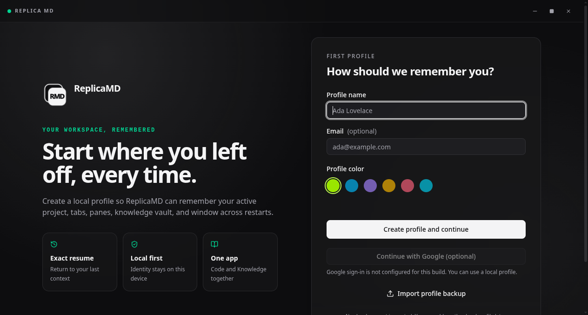

Give each agent room
Run Claude Code, Codex, or OpenCode as persistent replicas, with their own Git worktree and long-lived memory.
Windows & Linux beta · v2.0.9
A desktop workspace for AI coding agents that stay with your projects. Bring your terminal, agent memory, and Knowledge together, then pick up where you left off.
Local profiles. Your own AI provider. No Google account required.
Your next session starts
with the context you kept.

Linux first-session demo, recorded with disposable test data.
Create a local test profile, open the test project’s team and terminal, check the terminal’s project folder, then restart the app and return to the workspace. This short recording shows the Linux profile, project and terminal flow with a disposable repository.
Run Claude Code, Codex, or OpenCode as persistent replicas, with their own Git worktree and long-lived memory.
Keep project terminals and workspace context in one desktop app. Reopen the app and check that your project and tabs are restored.
Use the embedded Knowledge app for notes and attachments. Keep decisions beside the projects they explain.
Try ReplicaMD with a spare repository before moving important work into the beta.
Follow the first-task guideVersion 2.0.9 for Windows and Linux, x64. Bring Git and a separately installed, authenticated agent CLI. Provider charges and subscriptions are separate.
SHA256 checksums Installation instructions Release notes
Installers are unsigned. Native Windows installation, terminal and restart checks passed with disposable test data. Google remains in Testing and is restricted to approved test users. Keep independent backups and expect beta rough edges.